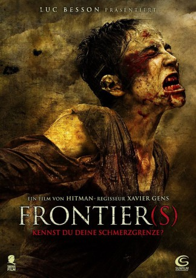

#5290 Frontier(s)
 
 IMDB-Wertung: 6.3 / 10
IMDB-Wertung: 6.3 / 10  Tomatometer: 55
Tomatometer: 55  Metascore: 0
Metascore: 0 
Während der Unruhen in den Pariser Banlieues verüben ein paar Kleinkriminelle einen Banküberfall, bei dem jedoch einer von ihnen getötet wird. Die Gang, zu der auch die schwangere Yasmina gehört, muss fliehen und verabredet sich in einem schäbigen Gasthaus im Niemandsland an der belgischen Grenze. Doch was sie dort erwartet, ist die Hölle auf Erden: Sie sind in die Fänge einer degenerierten Nazi-Familie geraten, die nur auf frisches Blut für das Ausleben ihrer wahnwitzigen Machtfantasien wartet. Als Yasminas Freunde auf unbeschreiblich brutale Weise gefoltert und getötet werden, erwacht jedoch ihr Mutterinstinkt, um sich und ihr ungeborenes Kind zu retten. Ein blutiger, gnadenloser Kampf ums Überleben beginnt!
Jahr: 2007
Dauer: 108 Minuten
FSK: 18
Land: Frankreich Studio: Illusions Unltd. FilmsTonspuren:
Untertitel:
Auflösung: 1080p (1920x824) Größe: 6451 MB
Genre: Thriller, Horror
Regisseur: Xavier Gens
Drehbuch: Stewart Williams
Soundtrack:
Darsteller:
- Karina Testa als Yasmine
 Samuel Le Bihan als Goetz
Samuel Le Bihan als Goetz- Estelle Lefébure als Gilberte
 Aurélien Wiik als Alex
Aurélien Wiik als Alex- Maud Forget als Eva
- Amélie Daure als Klaudia
- Hervé Berty als Hospital Policeman
- David Saracino als Tom
- Chems Dahmani als Farid
- Rosine Favey als La mere
 Adel Bencherif als Sami
Adel Bencherif als Sami- Joël Lefrançois als Hans
- Patrick Ligardes als Karl
- Jean-Pierre Jorris als Von Geisler
- Stéphane Jacquot als Policeman
- Christine Culerier als Nurse
- Jean-Jérôme Bertolus als TV Journalist
- Antoine Coesens als Politician
- Sandra Dorset als The Woman 'emballée'
- Henri-Pierre Plais als Child
- Maiko Vuillod als Child
- Patrick Vigne als Child
- Yannick Dahan als Extra , uncredited
- Jean-Philippe Goudroye als Policier , uncredited
Datei: X:\FSK18-2000-2009\Frontier(s) (2007, FSK18, 1920x824).mkv seit 11.01.2017
Festplatte: FSK18
 Es gibt insgesamt 106 Filme in der Gruppe 'FSK18-2000-2009'
Es gibt insgesamt 106 Filme in der Gruppe 'FSK18-2000-2009'